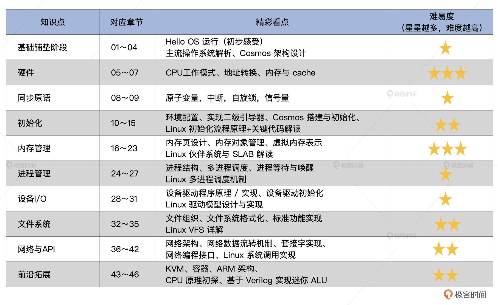

- 00 开篇词 为什么要学写一个操作系统？.md.html
- 00 编辑手记 升级认知，迭代自己的操作系统.md.html
- 01 程序的运行过程：从代码到机器运行.md.html
- 02 几行汇编几行C：实现一个最简单的内核.md.html
- 03 黑盒之中有什么：内核结构与设计.md.html
- 04 震撼的Linux全景图：业界成熟的内核架构长什么样？.md.html
- 05 CPU工作模式：执行程序的三种模式.md.html
- 06 虚幻与真实：程序中的地址如何转换？.md.html
- 07 Cache与内存：程序放在哪儿？.md.html
- 08 锁：并发操作中，解决数据同步的四种方法.md.html
- 09 瞧一瞧Linux：Linux的自旋锁和信号量如何实现？.md.html
- 10 设置工作模式与环境（上）：建立计算机.md.html
- 11 设置工作模式与环境（中）：建造二级引导器.md.html
- 12 设置工作模式与环境（下）：探查和收集信息.md.html
- 13 第一个C函数：如何实现板级初始化？.md.html
- 14 Linux初始化（上）：GRUB与vmlinuz的结构.md.html
- 15 Linux初始化（下）：从_start到第一个进程.md.html
- 16 划分土地（上）：如何划分与组织内存？.md.html
- 17 划分土地（中）：如何实现内存页面初始化？.md.html
- 18 划分土地（下）：如何实现内存页的分配与释放？.md.html
- 19 土地不能浪费：如何管理内存对象？.md.html
- 20 土地需求扩大与保障：如何表示虚拟内存？.md.html
- 21 土地需求扩大与保障：如何分配和释放虚拟内存？.md.html
- 22 瞧一瞧Linux：伙伴系统如何分配内存？.md.html
- 23 瞧一瞧Linux：SLAB如何分配内存？.md.html
- 24 活动的描述：到底什么是进程？.md.html
- 25 多个活动要安排（上）：多进程如何调度？.md.html
- 26 多个活动要安排（下）：如何实现进程的等待与唤醒机制？.md.html
- 27 瞧一瞧Linux：Linux如何实现进程与进程调度_.md.html
- 28 部门分类：如何表示设备类型与设备驱动？.md.html
- 29 部门建立：如何在内核中注册设备？.md.html
- 30 部门响应：设备如何处理内核I_O包？.md.html
- 31 瞧一瞧Linux：如何获取所有设备信息？.md.html
- 32 仓库结构：如何组织文件_.md.html
- 33 仓库划分：文件系统的格式化操作.md.html
- 34 仓库管理：如何实现文件的六大基本操作？.md.html
- 35 瞧一瞧Linux：虚拟文件系统如何管理文件？.md.html
- 36 从URL到网卡：如何全局观察网络数据流动？.md.html
- 37 从内核到应用：网络数据在内核中如何流转.md.html
- 38 从单排到团战：详解操作系统的宏观网络架构.md.html
- 39 瞧一瞧Linux：详解socket实现与网络编程接口.md.html
- 40 瞧一瞧Linux：详解socket的接口实现.md.html
- 41 服务接口：如何搭建沟通桥梁？.md.html
- 42 瞧一瞧Linux：如何实现系统API？.md.html
- 43 虚拟机内核：KVM是什么？.md.html
- 44 容器：如何理解容器的实现机制？.md.html
- 45 ARM新宠：苹果的M1芯片因何而快？.md.html
- 46 AArch64体系：ARM最新编程架构模型剖析.md.html
- LMOS来信：第二季课程带你“手撕”计算机基础.md.html
- 大咖助场 以无法为有法，以无限为有限.md.html
- 用户故事 yiyang：我的上机实验“爬坑指南”.md.html
- 用户故事 成为面向“知识库”的工程师.md.html
- 用户故事 技术人如何做选择，路才越走越宽？.md.html
- 用户故事 操作系统发烧友：看不懂？因为你没动手.md.html
- 用户故事 用好动态调试，助力课程学习.md.html
- 用户故事 艾同学：路虽远，行则将至.md.html
- 结束语 生活可以一地鸡毛，但操作系统却是心中的光.md.html
- 捐赠
00 编辑手记 升级认知，迭代自己的操作系统
你好，我是宇新，《操作系统实战45讲》的专栏编辑。
除了负责更新课程里的内容，我也一直关注着小伙伴们的留言。这次，终于有机会自己也留一回言了，很开心能用编辑手记的方式，和你聊一聊我的想法。
这门课的独特之处
细心的小伙伴可能发现了，我们的开篇词标题是“为什么要学写一个操作系统？”注意，不只是学操作系统，而是学着去“写”一个操作系统。
你可能还会想，平时我们接触不到的“黑盒子”，现在却要我们自己写代码实现，听起来很有挑战啊？为什么会这样设计呢，且听我慢慢道来。
操作系统博大精深，甚至每个子模块单拿出来讲，都有无数的知识点，太容易只见树木不见森林。但用一个实战项目连起来的话，就能很好地帮助我们聚焦关键问题。
看似“写”操作系统，这是把难度升级了，其实是为了控制我们的作战范围。写操作系统的时候，涉及哪些关键要点，我们就相应地学习研究这部分内容。
现在成熟的操作系统，像是Linux系统，它的源码量级已是今非昔比，我们去看源代码总会晕头转向。但老师的课程像是一条线，把实战需要的东西都展示出来，想要深入研究的同学建议对照查漏补缺，然后继续跟着课程走，这样才能实现“螺旋式”进步。
如果你也喜欢玩游戏的话，估计有这样的体验，把游戏调成了无敌模式，很容易就会索然无味。没错，有挑战的游戏才好玩。有时候卡在某一处确实很痛苦，但是突破以后也会爽。你不妨把自己当作玩家，去攻克一个个操作系统的关卡。当然了，你也不是孤军奋战，遇到疑问，还可以通过学习、交流和讨论去解决。
课程的思路我就说到这里，如果你感兴趣，还可以看看我们的课程设计文档。
更多课程设计的缘起，也可以看看LMOS老师好友Yason Lee的解读：《大咖助场｜以无法为有法，以无限为有限》。
怎样学习这门课
课程上线以后啊，LMOS老师跟我都在关注大家的留言反馈。
学习这门课的同学身份各异，从学生党到已经退休的朋友都有，但共同特点就是对操作系统充满热情，因为这样一个专栏而结缘。无论是在课程交流群，还是课程留言区里，这两个疑问算是高频出现的。
- 学习这门课，我需要什么前置知识？
- 某个问题/知识点好难啊，我该怎么办？
这里我就从编辑的视角说说我的看法吧。
先说第一个问题，需要什么基础。我一直在琢磨这个问题背后的含义。同学们的水平参差不齐，有畏难心理这很正常，你学习课程的时候，其实是明确了自己哪里“不会”，换个角度想，这样学习的时候不就能有的放矢了么？
不少同学担心自己不是科班出身，其实LMOS也不是科班出身的，这些历史问题还是翻篇更好，你过去怎么样，并不代表你之后不可以学习、研究操作系统。而且，就算是计算机相关专业的同学，可能学生时代上的操作系统课程也没留下特别深刻的印象，考完试就还给老师的，也大有人在。
现在还没有看完的同学也不要着急，因为更新的速度肯定要比你们的学习速度快上不少。你需要做的是按照课程顺序持续学习，慢慢来，遇到不懂的，就多看几篇，多看几遍。
课代表陈诚同学说过一句话，我记得特别深，他是这么说的：
“其实，我觉得我们想学写操作系统，有时候是为了一碟醋包了一顿饺子，但是最终饺子是自己的了。”
我注意到有不少小伙伴为了打牢基础，为了跟上课程，去补充了汇编、C语言，以及计算机组成原理方面的知识，我要给这些人点赞。
但是，就算你没有把那些图书从头看到尾，其实也同样可以跟着课程，循序渐进地学习。建议你边学边练，动手跑起来。哪怕最初你只能复制老师给的配套代码，但是只要肯用心，也会对操作系统有更深的理解。与其苦恼于自己基础不行，不如踏踏实实去学习精进。
为了让你明确每个模块的内容重点和难易程度，我为你整理了一张表格，你可以做个参考。

如果你还是想把操作系统的相关资料也都一并啃下来，那可以看看LMOS提供的参考书单，在学有余力的情况下拓展阅读。
1.关于编译工具：LD手册、GAS手册、GCC手册、nasm手册、make手册；
2.关于GRUB：GRUB手册；
3.关于CPU：Intel手册；
4.关于汇编：《汇编程序设计》；
5.关于C语言：《C语言程序设计现代方法》；
6.关于操作系统：《操作系统设计与实现》。
如果你想参考优秀课代表的学习经验与方法，可以参考后面这些用户故事。
1.零基础yiyang同学的课程实战经验；
2.优秀课代表pedro的技术学习方法；
3.技术发烧友spring Xu的课程学习思考；
4.安全产品研发leveryd的动态调试学习法；
5.课程优质笔记分享达人neohope的访谈加餐：技术学习与职业成长方法论。
下面我再说说第二个问题，当你具体学习的时候，觉得某个知识点很难，应该怎么办？对于这个问题我想给你分享三个小建议。
第一个建议就是做好心理建设。
就拿不少同学都觉得头疼的内存管理来说吧。其实当时我在看这部分稿件的时候，也觉得压力山大。记得当时LMOS老师还鼓励我说，挺过去就好了。现在你看到的内存章节，其中16～18讲原先是一整块的内容，我们经过讨论优化，考虑让大伙儿更容易跟上，才拆分细化成了三节课。
内存是内核的内核，肯定很难。不过就像英语单词不能永远背到“abandon”一样，想要深入地探索操作系统，这关必须迎难而上。
以第19课如何管理内存对象为例，不知道你看没看到置顶评论中“neohope”同学的学习笔记，建议重点关注一下他抓“关键”内容的能力。
古语说，不积跬步无以至千里。你可能会怀疑自己，但不必过度焦虑。如果咱们因为差距过大，而陷入弃疗状态，那就太可惜了。哪怕是“大佬”，也曾有萌新时期，基础不好就慢慢跟进。
第二个建议就是明确自己的需求，按需学习。
虽然没有什么“跳关”秘籍，但还是有些技巧让你快速掌握一节课内容的。没错，就像数据结构一样，每节课也有“内容结构”，想要快速消化，可以着重理一理后面这几点：
- 这个模块/这节课要解决什么问题（What）
- 思路是什么/ 为什么要这么解决（Why）
- 具体如何用代码实现（How）
你还可以自己动手用流程图画一下（pedro同学推荐了此方法，你可以试试绘图工具 Graph-Easy），这样不容易迷路。
当然，如果你已经有不少的学习积累，或者目的不在于“全景浏览”和“扫盲”，而是想要更加深入，那你必然要花费更多苦工。操作系统是星辰大海，建议以你困惑的问题为导向，进行专项突破。
比如，第23节课 Slab 内存对象，来自课程交流 1 群的zzyj同学就分享了Slab作者写的参考文献，你不妨搭配使用。
我的第三个建议是，积极交流，在反馈和记录中激励自己。
虽然学习方法重要，但我们也不要沉迷于把时间消耗在“找方法”上。很可能“优质方法”给你节省的时间，还赶不上你在找方法这件事上花掉的时间。
一人计短，众人计长，我们课程开设留言区，在部落开话题（推荐你在话题下分享自己的学习收获，晒一晒实战截图），搭建用户交流群，就是为了让你的学习之旅不再孤单，让我们在分享交流中一同进步。
除了多交流，我也强烈推荐你学习留痕，把你的阶段性学习成果、经验记录下来，这些都能激励自己坚持学习。都说闻道有先后，术业有专攻。百科全书式的人毕竟是少数，但爱学习的小伙伴总会遇到志同道合的朋友。
今天的提问者，也许明天就有能力给别人解答问题了，这就是教学相长。我们的助教 Jason提到：
“教别人是个沟通的过程，各种感官都会调度起来。调度越多，大脑参与理解记忆的部分就越多，以后回忆起来，搜索路径就越多。光看的话，只是眼睛。这跟实践出真知，道理类似。”
古语有云“读书有三到：谓心到，眼到，口到。”有了主动输出，可以带动你整理自己的理解，还锻炼了表达沟通能力，一举多得。
总之，你可以把这个专栏作为导航，但驾驶位你必须自己坐。临渊羡鱼，不如退而结网，坚持学习和实践，相信你会不虚此行。
1号用户的独家体验
说了这么多，最后我还想说说做这门课的感受。从5月10日上线到现在，这个专栏已经伴随你3个月的时间了。不过，作为享受了抢先阅读福利的编辑，我这个1号用户跟这个专栏共度的时间要更久一些，算上专栏的前期沟通、筹备、打磨这些环节一共8个月。
记得LMOS跟我说过，当年他写书的时候，用了13个月写完了22万字，而专栏里只算课程内容文字就超过了这个数字，但我们却是用了8个月跑完了这场“马拉松”。当然，老师的工作量远不止这些，就比如Cosmos配套代码的设计跟实现，同样是一个极具挑战的大工程。
说句题外话，LMOS兴趣广泛，爱好文学、音乐。日常写代码之余，他还会拍各种好看的照片（能当壁纸的那种），还是一个被代码“耽误”的摄影师。
但是他一旦进入工作状态，就会非常负责。操作系统的知识体量很大，为了把内容讲得更清楚，就需要老师花很多功夫对内容反复修订。除了对内容品质的高要求，老师也非常乐意回应大家的问题，在课程交流群里也很活跃。
LMOS身体力行地给我上了一课，我确实被他的热情打动了，也希望这份热情能够通过专栏传递给你。
最后我想和你说的是，积极学习，但不要盲目轻信。我们在第4节课分析各种操作系统特点的时候，老师有条留言回复是这样说的：
“保持中立，务实求真，对比之下，方见真章。”
这让我发现，学习就是我们把自己当作一个“操作系统”，保持理性，客观公正，而且要不断优化自己对外界信息的整合能力，升级自己的思考方式。
知识不懂，借助搜索工具就能较快填补，但思维方式的迭代，还有经验洞见的积累，却需要长时间的努力。课程更新结束了，但我们的学习之旅还很漫长。升级认知，迭代自己的操作系统，这需要长期坚持。
另外，Cosmos项目现在已经开源，也欢迎大家加入其中。希望《操作系统实战45讲》成为一座灯塔，为你指路，给你带来新鲜的认知，成为你探索星辰大海的引路者，加油！
© 2019 - 2023 Liangliang Lee. Powered by gin and hexo-theme-book.